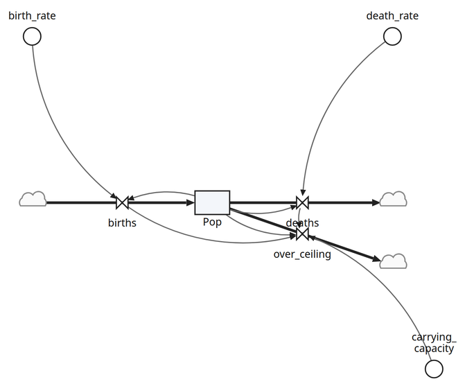

Elementary population model
A population growing by births and shrinking by deaths, each a fixed fraction of its size each year; growth is exponential until the population reaches a ceiling, its carrying capacity, which it cannot exceed.
It opens with its plots and its sliders: move a slider and the model runs again.
Open in SimileFrom Norman Owen-Smith's book Introduction to Modeling in Wildlife and Resource Conservation (Blackwell, 2007), converted from its TrueBASIC program ELEMPOP.tru and published here with his permission. The model spec: elempop.json.
